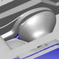

22-12-2008 (infoTRON) Ege Vitrifiye'de üç boyutlu optik sayýsallaþtýrma uygulamalarý:
Ege Vitrifiye, seramik ürünlerinin tasarým, imalat ve kalite kontrol iþlemlerinde kullanmak üzere, Breuckmann tarafýndan üretilen optoTOP-HE üç boyutlu optik tarama cihazýný ve INUS Tech. tarafýndan üretilen Rapidform tersine modelleme yazýlýmýný kullanmaktadýr... |
 |
11-12-2008 (Bias Müh.) Sonlu eleman yöntemi ile TÜVASAÞ vagonlarýnýn mukavemet hesaplarý:
TÜVASAÞ yetkilileri ile beraber mukavemete etki eden parçalar tespit edilmiþ ve bu parçalarýn orta yüzeylerinden geçen üç boyutlu CAD yüzey modelleri oluþturulmuþtur. Bu modeller kullanýlarak sonlu elemanlar aðý oluþturulmuþ ve kaynak baðlantýlarý yapýlmýþtýr... |
 |
01-12-2008
(Hofmann Türk) LaserCUSING ile metal prototip ve soðutma kanallý plastik enjeksiyon kalýplarý imalatý:
Hofmann Türk bünyesinde, Concept Laser GmbH firmasýnýn ürettiði M1 Cusing makinasý bulunmaktadýr. LaserCUSING® teknolojisiyle çalýþan bu makine, metal tozunu kat kat sererek %100 yoðunlukta parça üretimini saðlar. LaserCUSING®, yýllardýr çok karmaþýk soðutma kanallý kalýplarýn üretiminde kullanýlmaktadýr... |
 |
18-11-2008 (ORSASistem) Dell'den yeni Precision M6400 Covet ve M4400 iþ istasyonu serisi:
Dell, M6400 Covet ve M4400 serisinde bir çok konuda iyileþtirmeler yapmýþ, bunlarýn baþýnda RAM hacmi, iþlemci performansý, ekran kartý ve görsel tasarýmdaki iyileþtirmeleri sayabiliriz. Ayrýca Dell, NVIDIA ekran kartlarý ile yeni iþ istasyonlarýný taçlandýrmýþ...
|
 |
22-09-2008 (MechSoft) Bricscad V9, AutoCAD lisanslarýný deðiþtirmek veya artýrmak isteyen 2D ve 3D CAD platform kullanýcýlarýna en doðru alternatifi sunmaktadýr:
Bricscad V9T ana DWG formatýný okur, bu formatta yazar ve kullanýcýlarýna AutoCAD® ile %100 uyumluluk sunar. Bricscad V9T'un çok alýþýlmýþ bir kullanýcý arayüzü vardýr ve dolayýsýyla hiçbir eðitim gerektirmemektedir...
|
|
19-09-2008 (Mekano) MEKANO hýzlý CNC iþleme tezgahlarý ve uygulamalarý:
Ahþap, köpük, kompozit ve hafif metal malzemeleri yüksek süratte iþlemek üzere geliþtirip, ürettiðimiz CNC tezgahlarýmýz, mobilya, medikal, otomotiv, gemi, reklam, döküm sektörlerinde büyük boyutlu, düþük maliyetli, çok çeþitli uygulama esnekliði ile profesyonellerin tercihi olmuþtur... |
|
13-08-2008 (BSDT) Yükselen trend "explicit modelleme" ve CoCreate Modeling 2008:
CoCreate Modeling ile tasarýmcýlar
benzeri görülmemiþ esneklik ile tasarým yapabilirler. OneSpace Designer
daha iyi ürünleri daha hýzlý þekilde tasarlamanýzý saðlayan bir 3 boyutlu
CAD yazýlýmýdýr. Eþsiz Dinamik Modelleme yaklaþýmýyla tasarýmlar
olusturup, detaylar ve deðiþiklikler yaptýðýnýzda tam bir özgürlük
saðlar...
|
|
18-07-2008 (Destek Yazýlým) Solid Edge with Synchronous Technology, direkt modellemenin hýz ve esnekliðini, parametrik sistemlerin keskin kontrolü ile bir araya getiriyor:
Yepyeni etkileþimli bir tasarým ortamý içeren ve 3 boyutlu tasarýmýn kurallarýný deðiþtiren bu sürüm ile eskisinden 100 kat hýzlý ürün geliþtirmek hayalden gerçeðe dönüþüyor...
|
|
29-05-2008 (3B Dizayn) Vulcan; Döküm prosesleri için simülasyon yazýlýmý:
Vulcan, döküm firmalarýnýn imalatta karþýlaþabilecekleri hatalarý üretime geçmeden tespit etmek için kullandýklarý ileri düzey döküm simülasyon yazýlýmýdýr. Bu sayede imalatta yapýlan tüm prosesleri Vulcan içerisinde uygulayarak, makine çalýþmasýna gerek duymadan hata tespitlerini kolayca yapabiliriz. Firmalar bu sayede malzeme, iþçilik, zaman kayýplarýný en aza indirmiþ ve müþteri memnuniyetini de saðlamýþ olurlar...
|
|
15-03-2008 (3D Group) SolidWorks ile Entegre Çalýþan Tek CAM Yazýlýmý CAMWorks:
CAMWorks 1981 yýlýndan beri, SolidWorks ile birlikte dünyada ilk PC tabanlý (Windows tabanlý) çalýþan CAM programýdýr.
CAM programlarý içersinde dünyada ilk grafik (GUI) arayüzü ortaya çýkaran programdýr.
Dünya üzerinde 36.000 üzerinde lisanslý kullanýcýsý bulunmaktadýr. CAMWorks, endüstride; kalýpçýlýk, seri imalat, medikal sektörü, elektronik ve
Otomotiv sektörlerinde yaygýn olarak tercih edilmektedir...
|
|
10-03-2008 (Defne Müh.) CATIA ile tersine mühendislik çalýþmasý; Baret modellemesi ve modifikasyonu:
Ýþ güvenliði konusunda üretici bir firmadan gelen talep üzerine yeni modeller üzerine yapýlan çalýþma aþaðýda kýsaca özetlenmiþtir. Firma, yeni geliþtirmek istediði baret tipi için model hazýrlamýþtýr. El ile hazýrlanan model standart bir baret'in üzerinde alçý ve model malzemesi ile kaplanarak yeni bir form oluþturulmuþtur...
|
|
28-02-2008 (Üçgen Yazýlým) VERICUT CNC tezgah simülasyonu yazýlýmý, 5 eksenli tezgahlarýn %100 güvenli kullanýmýný saðlýyor:
VERICUT'ýn içinde tezgahýn kendisi modellenebildiði gibi kontrol ünitesinin de modellenebilmesi imkaný mevcut. Böylelikle programcý ya da operatör kontrol satýrýna tezgah ekranýnda girdiði komutlarý birebir girerek ekranda tezgahýný çalýþtýrabiliyor...
|
|
20-02-2008 (Redoks Müh.) Tebis Tel Erozyon; CAD modelden kesme programýna - hýzlý, güvenli ve verimli:
Özellikle kalýp üreticileri için geliþtirilen Tebis yazýlýmý, tel erozyon modülü ile bir diðer güçlü teknolojiyi kullanýcýlarýna sunuyor. Tel erozyon modülü Tebis'e entegre olduðu için gerek 2-eksen ve gerekse 4-eksen tel erozyon programlarý ilave veri transferlerine ihtiyaç duyulmaksýzýn hesaplanýp doðrudan tezgaha gönderilebilmektedir...
|
|
29-01-2008 (Ýnformatik) Kalýp imalatlarýnýzda güvenilir partneriniz; Pro/TOOLMAKER:
PTC yüksek hýzda iþleme'nin (high speed) gücünü, kalýp iþlemelerinizde ve yüksek hassasiyet gerektiren diðer CAM iþlerinde, hýzlý ve kullanýmý kolay NC takým yolu uygulamasý olan Pro/TOOLMAKER ile kullanýcýlara sunuyor. Artýk imalat mühendisleri ve operatörler post-processing ve takým kütüphanelerini tek bir ürün içerisinde toplayan çok daha güçlü NC programlama kapasitesine sahip bir ürüne sahip olabilir...
|
|
07-01-2008 (Redoks Müh.) Tebis RSC Hýzlý tersine mühendislik CAD modülü:
Tebis CAD/CAM yazýlýmýnýn RSC modülü, mesh modeller (STL) üzerinde yüksek kaliteli yüzeylerin oluþturulmasý için kullanýlan bir tersine mühendislik yazýlýmýdýr. Yazýlýmda sayýsallaþtýrýlmýþ veri modülü kullanýlarak hazýrlanan ya da STL arayüzü ile alýnan mesh verileri kullanýlabilir. Tebis RSC; ürün tasarýmý, mevcut bir ürünün kopyalanmasý ve sac kalýp imalatý gibi süreçler için ideal bir çözümdür...
|
|